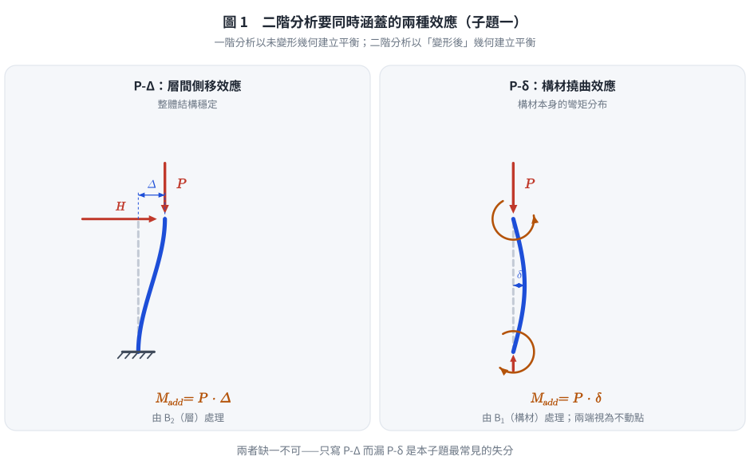
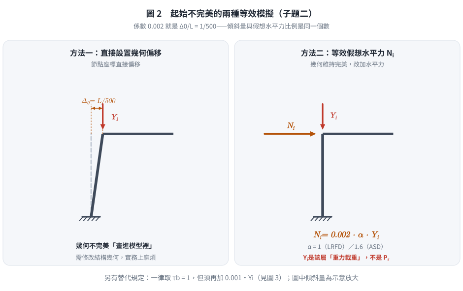
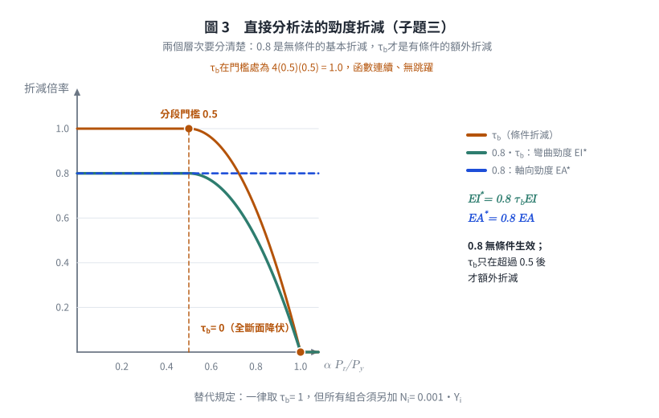
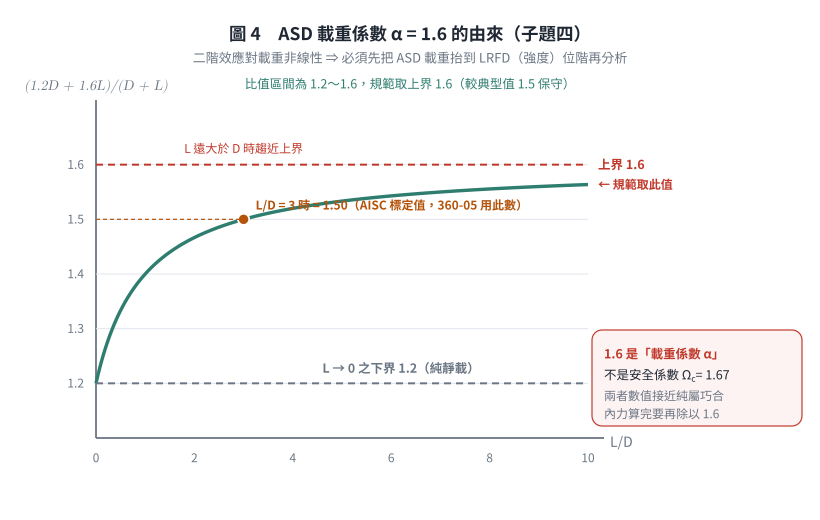

考題編號：SS-2011-1
主分類： SS-U1-3 梁柱桿件（穩定分析）
副分類： 無
設計法： 概念題
標籤： 直接分析法 二階分析 初始不完美 剛度修正 AISC 2010 Chapter C ASD載重係數 假想水平力 tau_b 規範版本差異
1. 原始題目重述 (Problem Restatement)
AISC 2010 年版鋼結構設計規範第 C 章（Chapter C: Design for Stability）針對 AISC 2005 年版第 C 章作大幅修改，將原有第 C 章移至附錄並改用全新規範。AISC 2010 第 C 章要求以直接分析法（Direct Analysis Method of Design）進行鋼結構強度確認。
試簡要說明 AISC 2010 第 C 章中：
(一) 二階分析與一階分析有何不同？
(二) 二階分析除直接設置結構起始不完美外，亦可用何者來模擬此起始不完美？
(三) 二階分析為何要作剛度修正？什麼情況下需要作剛度修正？
(四) 1.6 倍 ASD 載重中，如何得出此係數 1.6？（25 分）
本題無附圖。
2. 考題核心精神與出題者意圖 (Core Concepts & Examiner's Intent)
核心觀念： 測試考生對 AISC 2010 Chapter C「直接分析法」四大核心要素的理解深度——二階效應、初始不完美、剛度折減、ASD 載重放大。
出題者意圖：
- 確認考生理解「直接分析法」相較於傳統有效長度法（ELM）的根本差異
- 測試考生能否說明二階分析的理論基礎（P-Δ、P-δ 效應）
- 考察考生對初始不完美模擬方式（直接偏移 vs. 等效假想水平力 NI）的理解
- 測試勁度修正（$0.8\tau_b$ 折減）的物理意義
- 測試 ASD 中 1.6 倍載重的推導邏輯
陷阱： 二階分析不只考慮 P-Δ（整體側移），還要考慮 P-δ（構材撓曲），兩者缺一不可。
3. 解題戰略地圖與陷阱分析 (Strategic Roadmap & Trap Analysis)
| 子題 | 核心考點 | 關鍵陷阱 |
|---|---|---|
| (一) | P-Δ + P-δ 二階效應說明 | 一階分析忽略幾何非線性，二階分析考慮變形後幾何 |
| (二) | 等效假想水平力 NI | 非「直接設置偏移」，而是等效替代法 |
| (三) | $\tau_b$ 剛度折減的條件 | 全部構材一律 $0.8$；$\alpha P_r/P_y > 0.5$ 時再乘 $\tau_b < 1$ |
| (四) | ASD 載重係數 $\alpha = 1.6$ 的由來 | ⚠️ 1.6 是載重係數，不是安全係數 $\Omega$（$\Omega_c = 1.67$）。二階效應對載重非線性 ⇒ 必須在強度（LRFD）載重位階分析 |
3.5 變數層次分析（Variable Hierarchy Analysis）
複習提示：解題後，在每個卡住的知識點「卡關?」欄標記
⚠；第二次複習時只看有⚠的項目。
最終目標： 正確說明 AISC 2010 Chapter C 直接分析法四大核心要素：二階分析、初始不完美、剛度折減、ASD 1.6 倍係數推導
主要公式（$\boxed{\phantom{x}}$ = 未知，待推導）
子題三：剛度修正
$$EI^ = 0.8\,\tau_b\,EI, \quad EA^ = 0.8\,EA \qquad (\text{規範符號為 } \tau_b\text{，不是 } \tau_a)$$
$$\boxed{\tau_b} = \begin{cases} 1.0 & \alpha P_r/P_y \leq 0.5 \ 4\left(\dfrac{\alpha P_r}{P_y}\right)\left(1 - \dfrac{\alpha P_r}{P_y}\right) & \alpha P_r/P_y > 0.5 \end{cases}$$
子題四：ASD 係數推導
$$\boxed{\alpha} = \frac{P_u}{P_a} \xrightarrow{L \gg D} \frac{1.6L}{L} = 1.6$$
L1：題目直接給定
| 符號 | 數值 | 說明 |
|---|---|---|
| 規範版本 | AISC 2010 Chapter C | 直接分析法（DAM） |
| 子題數 | 四個子題 | 二階分析、初始不完美、剛度折減、1.6 係數 |
L2：需知識點推導
Step 1：二階分析 vs 一階分析
| 符號 | 公式 / 來源 | 卡關? |
|---|---|---|
| 一階分析 | 基於未變形幾何，忽略幾何非線性 | |
| P-Δ 效應 | 整體側移 $\Delta$ 在柱軸力 $P$ 下產生附加彎矩 $M_{add} = P\Delta$ | |
| P-δ 效應 | 構材撓曲 $\delta$ 在軸力 $P$ 下產生附加彎矩 $M_{add} = P\delta$ |
Step 2：初始不完美模擬
| 符號 | 公式 / 來源 | 卡關? |
|---|---|---|
| 直接偏移法 | 節點坐標偏移 $\Delta_0 = L/500$ | |
| 等效假想水平力（NI） | $N_i = 0.002 \alpha Y_i$（$\alpha = 1.0$ LRFD；$\alpha = 1.6$ ASD） |
Step 3：剛度折減條件
| 符號 | 公式 / 來源 | 卡關? |
|---|---|---|
| 基本折減 | 所有對穩定有貢獻之構材：$EI^ = 0.8\tau_bEI$、$EA^ = 0.8EA$ | |
| $\tau_b$ | 當 $\alpha P_r/P_y > 0.5$ 時 $\tau_b = 4(\alpha P_r/P_y)(1-\alpha P_r/P_y) < 1$ | |
| $\alpha P_r/P_y \leq 0.5$ | $\tau_b = 1.0$，只乘基本折減 0.8 | |
| 替代規定 | 規範允許一律取 $\tau_b = 1.0$，但須額外施加 $0.001Y_i$ 的假想水平力 | |
| 物理意義 | 殘留應力使有效勁度下降；高估勁度會低估側移與二階彎矩，導致不安全 |
Step 4：ASD 係數 1.6 推導
| 符號 | 公式 / 來源 | 卡關? |
|---|---|---|
| 核心理由 | 二階效應對載重非線性，須在 LRFD（強度）載重位階評估；ASD 組合約為 LRFD 的 $1/1.6$ | |
| 常見推導 | $\dfrac{1.2D+1.6L}{D+L}$：$D\to0$ 時 $\to 1.6$（上限）；$L\to0$ 時 $\to 1.2$（下限）→ 取上限 1.6 | |
| ⚠️ 校核事實 | AISC 的 ASD↔LRFD 標定是 $\Omega = 1.5/\phi$（$L/D = 3$ 時 $\gamma = 1.5$），且 360-05 的 H1.2 用的常數就是 1.5，360-10 才改為 $\alpha = 1.6$。故「1.6」較 1.5 更保守，AISC 解說並未明列單一推導 |
L3：深層知識（不懂就卡住）
| 知識點 | 說明 | 補強頁 | 卡關? |
|---|---|---|---|
| P-Δ vs P-δ 差異 | P-Δ 影響整體結構穩定（層間側移）；P-δ 影響構材彎矩分布（桿件撓曲）；兩者均需考慮 | [[P-DELTA-EFFECT]] · [[SECOND-ORDER-ANALYSIS]] | |
| 假想水平力 $N_i$ 的 0.002 來源 | 對應柱初始傾斜 $1/500$（$\Delta_0/L = 0.002$，AISC 施工容許誤差）之等效水平力比例；$Y_i$ 是該層重力載重，不是 $P_r$ | ||
| $N_i$ 何時可只加在重力組合 | 當 $\Delta_{2nd}/\Delta_{1st} \leq 1.7$（360-16：$\leq 1.7$）時，$N_i$ 可視為「最小側力」只加在純重力組合；超過則須加在所有組合 | ||
| 勁度折減 0.8 的物理意義 | 使 DAM 的構材強度曲線與 ELM 的柱曲線在無側移情況下吻合（校準用）；$\tau_b$ 的額外折減反映高軸力下殘留應力造成的非彈性軟化 | [[RESIDUAL-STRESS]] · [[TANGENT-MODULUS-THEORY]] | |
| DAM 令 $K = 1.0$ 的原因 | DAM 已在分析中直接考慮二階效應、初始不完美、勁度折減，$K$ 的補償作用已無必要 —— 規範明定取 $K = 1$（不是「不得小於 1.0」） | [[effective-length-chart]] | |
| ELM／一階分析法的適用限制 | AISC 360-16 附錄 7：ELM（7.2）與一階分析法（7.3）皆限 $\Delta_{2nd}/\Delta_{1st} \leq 1.5$；一階分析法另限 $\alpha P_r/P_y \leq 0.5$。DAM 無此限制，適用所有結構 | ||
| ASD 1.6 倍載重後的還原 | 二階分析得到內力後需除以 1.6，再與 ASD 容許強度比較 |
4. 步驟化詳細計算過程 (Step-by-Step Detailed Calculation)
(一) 二階分析與一階分析的差異
一階分析（First-order Analysis）：
- 基於未變形（原始）幾何建立平衡方程式
- 假設結構變形量極小，忽略幾何非線性
- 計算結果不含軸力與撓度交互影響的附加彎矩
二階分析（Second-order Analysis）：
- 基於已變形後的幾何建立平衡方程式
- 考慮兩種二階效應：
$$\boxed{P\text{-}\Delta \text{ 效應（整體側移效應）}}$$
即結構整體側移 $\Delta$ 在柱軸力 $P$ 下所產生的附加傾覆彎矩：
$$M_{add} = P \cdot \Delta$$
此效應影響整體結構穩定性。
$$\boxed{P\text{-}\delta \text{ 效應（構材局部撓曲效應）}}$$
即構材在軸壓下，由於自身撓曲 $\delta$ 所產生的附加彎矩：
$$M_{add} = P \cdot \delta$$
此效應影響構材本身的彎矩分布。
策略註解： 二階分析的本質是「在每個迭代步驟中更新幾何構形」，使平衡方程式反映真實的幾何非線性。一階分析只是二階分析的線性近似。

圖 1 二階分析要同時涵蓋的兩種效應。左圖的變形量是「層」的、右圖是「構材」的；這張圖攔的是子題(一) 只寫 P-Δ 而漏掉 P-δ。
(二) 模擬起始不完美（Initial Imperfections）的兩種方式
AISC 2010 Chapter C 允許以下兩種方式模擬結構的初始幾何不完美：
方法一：直接偏移法（Direct Geometric Imperfection）
- 在模型中直接將節點坐標偏移，使結構幾何形狀反映初始傾斜或撓曲
- 典型假設：柱的初始傾斜量為 $\Delta_0 = L/500$（AISC 規範値）
方法二：等效假想水平力法（Notional Loads, NI）
- 以施加假想水平力（Notional Loads）來等效替代幾何不完美的影響
- 假想水平力大小：
$$N_i = 0.002 \cdot \alpha \cdot Y_i$$
其中：
- $N_i$：施加於第 $i$ 樓層的假想水平力
- $Y_i$：第 $i$ 樓層所承受的重力載重
- $\alpha = 1.0$（LRFD）或 $\alpha = 1.6$（ASD）
物理意義： 0.002 係數對應於柱初始傾斜 $1/500$（即 $\Delta_0/L = 1/500$）的等效水平力比例。
策略註解： 兩種方法在物理上是等效的，實務上多採用假想水平力法，因為不需要修改結構幾何。

圖 2 起始不完美的兩種等效模擬。$0.002$ 就是 $\Delta_0/L = 1/500$ 這個同一個數；這張圖攔的是把 $N_i$ 寫成 $0.002P_r$（$Y_i$ 是該層重力載重，不是構材需求軸力）。
(三) 剛度修正（Adjustments to Stiffness）
為何需要剛度修正？
鋼結構在軸壓作用下，材料在到達彈性挫屈載重之前，因殘留應力的存在會提前進入局部降伏，導致有效剛度降低。若分析中仍使用彈性剛度 $EI$，將高估結構的抵抗側移能力，導致不安全的設計結果。
AISC 2010 §C2.3 規定對所有對結構穩定有貢獻的構材作以下修正（規範符號為 $\tau_b$，不是 $\tau_a$）：
$$EI^ = 0.8\,\tau_b\,EI \quad \text{（彎曲勁度）}$$
$$EA^ = 0.8\,EA \quad \text{（軸向勁度）}$$
其中勁度折減係數 $\tau_b$：
$$\tau_b = \begin{cases} 1.0 & \text{當 } \dfrac{\alpha P_r}{P_{y}} \leq 0.5 \[6pt] 4\dfrac{\alpha P_r}{P_y}\left(1 - \dfrac{\alpha P_r}{P_y}\right) & \text{當 } \dfrac{\alpha P_r}{P_{y}} > 0.5 \end{cases}$$
其中：
- $P_r$：構材之需求軸壓強度
- $P_y = F_y A_g$：構材全斷面降伏力
- $\alpha = 1.0$（LRFD）或 $\alpha = 1.6$（ASD）
兩個層次要分清楚：
| 折減 | 適用範圍 | 何時生效 |
|---|---|---|
| 0.8（基本折減） | 所有對穩定有貢獻的構材，無條件 | 一律生效 |
| $\tau_b$（額外折減） | 受壓構材之彎曲勁度 | 僅當 $\alpha P_r/P_y > 0.5$ |
何時需要作勁度修正？
$$\boxed{\text{勁度修正一律要做（}0.8\text{）；當 } \frac{\alpha P_r}{P_y} > 0.5 \text{ 時再額外乘 } \tau_b < 1.0}$$
$\tau_b$ 於 $\alpha P_r/P_y = 0.5$ 時值為 $4(0.5)(0.5) = 1.0$（連續，無跳躍）；於 $= 1.0$ 時降為 0（構材已全斷面降伏、失去彎曲勁度）。
兩個物理意義層次：
- 0.8：並非直接代表殘留應力，而是校準值——使 DAM（$K=1$）算出的構材強度與 ELM 的柱曲線在無側移標準情況下吻合。
- $\tau_b$：反映高軸力下殘留應力造成的非彈性軟化（切線模數下降），使構材的側向勁度貢獻隨軸力增加而衰減。
實用替代規定（AISC 360-10 §C2.3(4)／360-16 §C2.3(c)）：允許一律取 $\tau_b = 1.0$，但須在所有載重組合中額外施加 $N_i = 0.001Y_i$ 的假想水平力（與模擬初始不完美的 $0.002\alpha Y_i$ 相加）。此法免除逐構材迭代 $\tau_b$ 的麻煩，是實務常用做法。

圖 3 兩個折減層次的分工。$0.8$ 是無條件的水平線、$\tau_b$ 才是超過 $\alpha P_r/P_y = 0.5$ 才轉折的曲線；這張圖攔的是「只有非彈性時才折減」這個常見誤答。
(四) ASD 載重中係數 1.6 的推導
問題核心： 直接分析法是基於 LRFD 載重組合開發的，ASD 設計載重為服務載重（未因數化），需要乘以 1.6 才能進行二階分析。
推導過程：
LRFD 典型重力載重組合：
$$P_u = 1.2 D + 1.6 L$$
ASD 典型服務載重：
$$P_a = D + L$$
比較兩者之比值：
在「活載重 $L$ 遠大於恆載重 $D$」的極端情況（控制設計的最不利情形）：
$$\frac{P_u}{P_a} = \frac{1.2D + 1.6L}{D + L} \xrightarrow{L \gg D} \frac{1.6L}{L} = 1.6$$
在「僅有恆載重 $D$，無活載重」的另一極端：
$$\frac{P_u}{P_a} = \frac{1.2D}{D} = 1.2$$
因此，LRFD 因數化載重相對於 ASD 服務載重的比值介於 1.2 至 1.6 之間。AISC 2010 規範取最保守值（上限）：
$$\boxed{\alpha = 1.6 \text{（ASD 時）}}$$
應用方式： ASD 進行直接分析法時，所有載重乘以 1.6 進行二階分析及穩定性計算；內力結果再除以 1.6，與 ASD 容許強度比較。
⚠️ 三點必須說清楚（本子題最容易答得似是而非之處）：
-
1.6 是「載重係數 $\alpha$」，不是安全係數 $\Omega$。 ASD 的安全係數是 $\Omega_c = 1.67$（壓力）、$\Omega_b = 1.67$（撓曲）；$\alpha = 1.6$ 只用來把 ASD 載重「抬升」到 LRFD 位階以正確評估二階效應。兩者數值接近（1.6 vs 1.67）純屬巧合，混稱是常見扣分點。
-
為什麼一定要抬升？ 二階效應（$B_2 = 1/(1-\sum P/\sum P_e)$）對載重是非線性的：在服務載重下算出的放大量會系統性低估強度位階的放大量。因此必須在 LRFD 位階分析，再把內力除回來。這是 AISC 給出的根本理由，比「1.6 怎麼算出來」更重要，答題時應先寫這一點。
-
1.6 這個數字的來源要誠實交代。 AISC 規範解說並未給出唯一的算式，只說明「ASD 載重組合約為 LRFD 的 $1/1.6$」。可佐證的三項事實：
- $\dfrac{1.2D+1.6L}{D+L}$ 的區間為 $1.2 \sim 1.6$，取上限 1.6 最保守（上面的推導）；
- AISC 的 ASD／LRFD 標定關係為 $\Omega = 1.5/\phi$，其中 1.5 來自 $L/D = 3$ 時 $\dfrac{1.2D+1.6L}{D+L} = 1.5$；
- AISC 360-05 §H1.2 用的常數就是 1.5，到 360-10 才以 $\alpha = 1.6$ 取代。
換言之：1.5 是「典型」比值，1.6 是「上限」比值，規範選了較保守的 1.6。 考場作答寫「取 $L \gg D$ 之上限 1.6，較典型值 1.5 保守」即完整。

圖 4 $\alpha = 1.6$ 的由來與界線。比值區間 $1.2\sim1.6$、規範取上界；這張圖攔的是把 $\alpha = 1.6$ 誤稱為安全係數 $\Omega_c = 1.67$（兩者數值接近純屬巧合）。
5. 關鍵爭議點與進階探討 (Critical Issues & Advanced Discussion)
直接分析法 vs. 有效長度法（ELM）的根本差異
| 比較項目 | 直接分析法（DAM） | 有效長度法（ELM） |
|---|---|---|
| 二階效應 | 分析中直接考慮 | 以 K 值間接考慮 |
| 初始不完美 | 顯式模擬（偏移或 NI） | 隱含於 K 值中 |
| 勁度折減 | 顯式折減（$0.8\tau_bEI$、$0.8EA$） | 不折減（用彈性勁度） |
| K 值 | 可設定 K=1.0 | 必須計算 K |
| 適用範圍 | 所有結構型式 | 規則框架較準確 |
為何 DAM 可以令 K=1.0？
DAM 已在分析過程中直接考慮了所有的二階效應、初始不完美和非彈性勁度折減，因此構材的強度驗算不再需要透過 $K$ 值來補償這些效應。規範 §C3 明定：構材受壓強度之有效長度取 $K = 1$（不是「不得小於 1.0」——是就等於 1）。
三者的分工可以這樣記：
| 效應 | ELM 如何處理 | DAM 如何處理 |
|---|---|---|
| 二階效應（P-Δ、P-δ） | 隱含於 $K > 1$ ＋ $B_1B_2$ | 分析中直接算 |
| 初始不完美 | 隱含於 $K$ 與柱曲線 | 顯式：節點偏移 $L/500$ 或 $N_i = 0.002\alpha Y_i$ |
| 非彈性軟化 | 隱含於柱曲線（$0.658^{\lambda^2}$） | 顯式：$0.8\tau_bEI$ |
三個效應都被「移到分析裡」之後，$K$ 就沒有工作可做了。
考場建議
本題為純概念說明題，評分重點在於四個子問題各能精準說明核心機制。每子題建議答案長度：3–5 行，含關鍵術語（P-Δ、P-δ、Notional Load、$\tau_b$、$0.002\alpha Y_i$、$0.8\tau_bEI$），且須提供公式支撐。
四個子題的「必寫關鍵詞」檢查表：
| 子題 | 必寫 | 常見失分 |
|---|---|---|
| (一) | 「以變形後幾何建立平衡」＋ P-Δ（層間側移）＋ P-δ（構材撓曲），兩者缺一不可 | 只寫 P-Δ、漏 P-δ |
| (二) | 假想水平力（Notional Load） $N_i = 0.002\alpha Y_i$；$Y_i$ 是該層重力載重 | 寫成 $0.002P_r$、或漏掉 $\alpha$ |
| (三) | 一律 $0.8$；$\alpha P_r/P_y > 0.5$ 時再乘 $\tau_b$；理由是非彈性軟化／校準 | 誤答「只有非彈性時才折減」（0.8 是無條件的）；符號寫成 $\tau_a$ |
| (四) | 1.6 是載重係數 $\alpha$，因二階效應對載重非線性、須在 LRFD 位階分析；$1.2\sim1.6$ 取上限 | 誤稱 $\Omega = 1.6$；忘記「內力再除以 1.6」 |
6. 依最新規範（AISC 360-16／-22）對照
本題的特殊性：本題問的就是當時的「最新規範」（AISC 2010）。故本節說明 AISC 2010 → 2016 → 2022 這三版之間，第 C 章又有哪些變動；以及台灣規範至今仍未引進直接分析法這件事。
6.1 台灣規範的現況：仍在 ELM 體系
| 規範 | 穩定設計方法 | $K$ | 初始不完美 | 勁度折減 |
|---|---|---|---|---|
| 台灣 2010（現行） | 有效長度法（ELM） ＋ 第 8.2 節 $B_1B_2$ | 需查對位圖（4.8 節） | 無顯式規定 | 無 |
| AISC 360-05 | ELM 為主，DAM 在附錄 7 | 需算 | 附錄 7 | 附錄 7 |
| AISC 360-10／-16／-22 | DAM（第 C 章，主方法） | $= 1$ | §C2.2 明文 | §C2.3 明文 |
⚠️ 這是本科的重要規範落差：台灣現行規範沒有直接分析法，本題（100 年／2011）等於在考「美國新規範」而非「我國規範」。以 AISC 360-16 為基礎之台灣修訂版尚未發布。
6.2 AISC 2010 → 2016 → 2022 的第 C 章變動
| 項目 | AISC 360-10（本題所問） | AISC 360-16 | AISC 360-22 |
|---|---|---|---|
| 章節結構 | Ch. C = DAM；App. 7 = ELM；App. 8 = $B_1B_2$ | 同 | 同 |
| 分析須計入之變形 | 撓曲、剪力、軸向 | 明列「及所有其他構材與接合變形」 | 同 |
| $\tau_b = 1.0$ 之替代規定 | §C2.3(4)，加 $0.001Y_i$ | §C2.3(c)，同 | 同 |
| $\alpha$（ASD） | §C2.1，$= 1.6$ | 同 | §C2.1(d)（條號調整），$= 1.6$ 不變 |
| 有效長度符號 | $KL$ | $L_c = KL$（新符號） | $L_c$ |
| ELM 適用限制 | $\Delta_{2nd}/\Delta_{1st} \leq 1.5$ | 同 | 同 |
| 一階分析法 | App. 7.3（$\alpha P_r/P_y \leq 0.5$） | 同 | 同 |
最需要注意的一項：AISC 360-16 起把有效長度寫成 $L_c = KL$，並在 E3 等式中直接用 $L_c$。若以新版術語作答，「$K$」要寫成「$L_c/L$」。本題屬 2011 年考題，用 $KL$ 即可。
6.3 $\alpha = 1.6$ 在 360-22 仍然不變
$$\text{AISC 360-22 §C2.1：ASD 之二階分析須在 } \mathbf{1.6} \times (\text{ASD 載重組合}) \text{ 下進行，結果再除以 } 1.6$$
自 2010 年引入至 2022 年版，這個係數三版未變。附錄 8 的 $B_2$ 分母亦寫成 $1 - \alpha\sum P_r/\sum P_{e\,story}$，同一個 $\alpha$。
6.4 對照結論
| 子題 | AISC 2010（本題主答） | AISC 360-16／-22 | 差異 |
|---|---|---|---|
| (一) 二階 vs 一階 | P-Δ ＋ P-δ | 同（-16 另明列「所有其他變形」） | 微幅擴充 |
| (二) 初始不完美 | 節點偏移 $L/500$ 或 $N_i = 0.002\alpha Y_i$ | 同 | 無 |
| (三) 勁度折減 | $0.8\tau_bEI$、$0.8EA$；可取 $\tau_b=1$＋$0.001Y_i$ | 同（條號 C2.3(c)） | 條號變 |
| (四) $\alpha = 1.6$ | 1.6 | 1.6（不變） | 無 |
| $K$ | $= 1$ | $L_c = L$（符號改） | 符號 |
四個子題的答案在 360-10／-16／-22 三版下實質相同；本題的內容至今仍是有效的。真正的落差在於台灣規範尚未引進 DAM——作答時若被問「我國規範如何規定」，須答「我國現行仍採有效長度法＋$B_1B_2$（第 8.2 節），尚無直接分析法之對應條文」。
修正日期：2026-08-22（勘誤：①勁度折減係數符號 $\tau_a$ 全面更正為規範用的 $\tau_b$；②釐清「$0.8$ 是無條件折減、$\tau_b$ 才是條件折減」（原文易讓人誤解為只有非彈性才折減），並補 $\tau_b$ 在 $\alpha P_r/P_y = 0.5$ 處連續、$= 1.0$ 處歸零之性質，以及「一律取 $\tau_b=1$ ＋ 額外 $0.001Y_i$」之替代規定；③§3 表格「ASD 安全係數 $\Omega = 1.6$」更正為「載重係數 $\alpha = 1.6$」（$\Omega_c = 1.67$ 才是安全係數）；④子題(四) 補上誠實的來源交代——AISC 解說未列單一推導，且 360-05 用的常數是 1.5、360-10 才改為 1.6，$\Omega = 1.5/\phi$ 的標定給的是 1.5，故 1.6 是「取上限較保守」；⑤「$K$ 可取 1.0（但不得小於 1.0）」更正為規範明定「取 $K=1$」；⑥補 $N_i$ 之 $Y_i$ 定義（重力載重，非 $P_r$）與 $\Delta_{2nd}/\Delta_{1st} \leq 1.7$ 之最小側力規定、ELM／一階分析法之 $\leq 1.5$ 適用限制；⑦新增 §6：台灣規範仍在 ELM 體系（無 DAM）之落差說明，及 360-10→-16→-22 第 C 章變動對照（含 $L_c = KL$ 新符號、$\alpha=1.6$ 三版未變））
驗證狀態：unverified